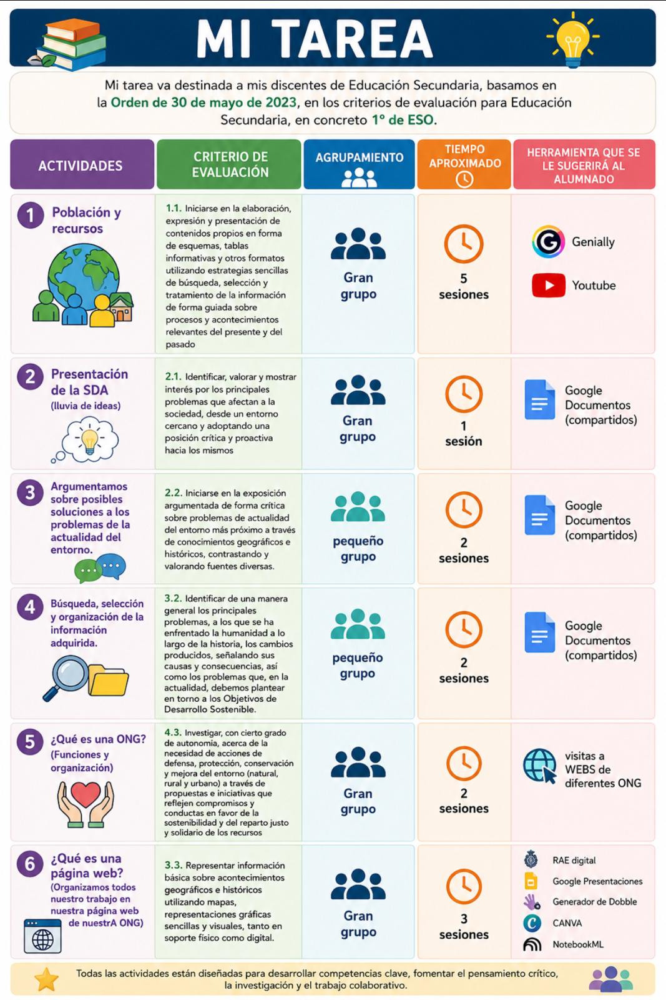

Texto

RESOLUCIÓN DE PROBLEMAS TÉCNICOS DEL USO DE LAS TECNOLOGÍAS EN EL AULA:
Como docente en el contexto de Andalucía, con la implantación de los modelos de enseñanza digital ,es fundamental tener un protocolo de actuación para
que la tecnología sea un aliado y no un obstáculo.
Para resolver los problemas técnicos en el aula, considero que la clave es un enfoque proactivo dividido en:
1. Nivel Preventivo (Antes de que ocurra)
La mejor forma de resolver un problema es evitarlo.
● Plan B (Analógico/Híbrido): Siempre debemos tener una alternativa "offline". Si la actividad es un Genially, tener una versión
descargada o una
dinámica en papel/pizarra que permita alcanzar el mismo objetivo.
● Formación en Autonomía: Enseñar al alumnado (y especialmente a figuras como el "Responsable Digital" del equipo cooperativo) a solucionar
fallos básicos: comprobar la conexión WiFi, reiniciar el dispositivo o revisar los cables.
2. Nivel Operativo (Durante el problema)
Si el fallo ocurre en plena sesión:
● Tutoría entre iguales: Muchas veces, un compañero con nivel digital alto puede resolver la incidencia más rápido que el docente, permitiendo
que la clase no se detenga.
● Protocolo de Incidencias del Centro: En los centros andaluces contamos con la figura del TDE (Transformación Digital Educativa). Si el
problema es de red o de hardware pesado, se debe comunicar mediante el canal oficial (habitualmente un formulario o parte de incidencias) para
que el coordinador técnico intervenga.